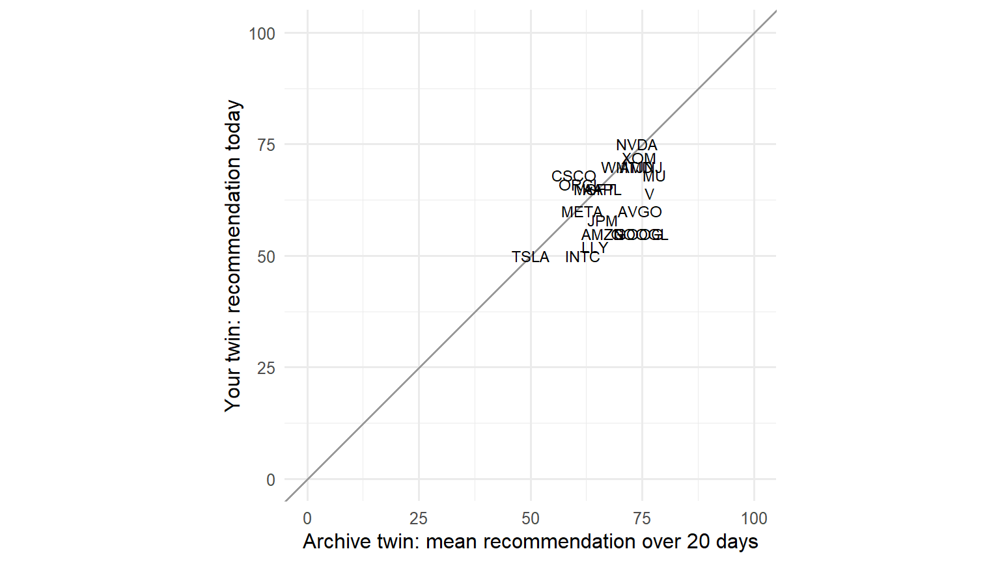
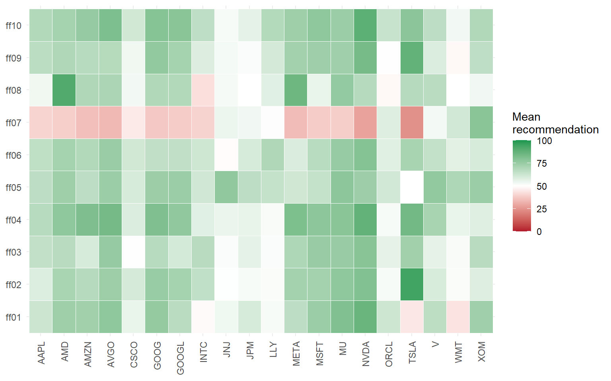

library(data.table)
library(ggplot2)
library(jsonlite)
DATA <- file.path("..", "data")
OUT <- file.path("..", "output")
dir.create(OUT, showWarnings = FALSE)Notebook 1 — Finfluencer twins and the daily interview
LLMSS 2026, Workshop 2 (The Wisdom of Digital Twins) · Hong Kong, 13 October 2026
What you will do
A finfluencer twin is a language model asked to answer as a particular financial influencer would, given that person’s public profile. The Talking to Machines finfluencer panel interviews about 90 such twins every trading day and asks each to rate 100 large US stocks. In this notebook you work with ten of them:
- meet the twins: read the profile card each twin is built from;
- see the interview: the exact prompt the panel sends every day;
- interview a twin yourself: once, live, on 20 stocks;
- open the archive: the same ten twins’ answers on the same 20 stocks over 20 trading days, already collected;
- assemble a panel: turn those answers into one bullish-or-bearish score per stock and day, the input Notebook 2 builds a trading signal from.
Only Section 3 calls a language model, and only if an API key is set. Everything else runs offline.
How to read this notebook. As in Workshop 1, every table and figure the code prints has a number, given in bold just above the code that prints it, and the text says which table, row or column a number comes from.
The first block loads the R packages the notebook uses and sets the folders it reads from and writes to.
1. The twins
Each twin starts from a profile card. In the panel itself the card is the influencer’s X profile (name, bio, follower counts, account age) followed by their most recent posts. Here the cards are anonymous: the ten influencers are ff01 to ff10, their numbers are rounded, and their bio and recent posts are described in a sentence or three rather than quoted.
The block below loads the ten cards as cards and prints who they are.
Table 1.1. cards: the ten twins.
cards <- fread(file.path(DATA, "ff_persona_cards.csv"))
cards[, .(twin_id, on_x_since, followers, focus, audience)]| twin_id | on_x_since | followers | focus | audience |
|---|---|---|---|---|
| ff01 | 2020 | 140000 | Event-driven and income investing: merger arbitrage, value with a catalyst, closed-end funds, REITs, preferred shares, distressed debt | Seasoned investors |
| ff02 | 2022 | 32000 | A single stock: Tesla, and electric vehicles more broadly | Young, retail investors |
| ff03 | 2022 | 24000 | Short-term trading of index ETFs, Tesla and crypto | Seasoned investors |
| ff04 | 2021 | 47000 | Options income strategies | Retail options traders, novice to intermediate |
| ff05 | 2011 | 21000 | Dividend growth stocks, with some options and trend trading | Seasoned investors |
| ff06 | 2018 | 610000 | Equity trading and technical analysis | Seasoned investors |
| ff07 | 2016 | 20000 | Macroeconomics and politics as they move markets | General audience |
| ff08 | 2025 | 20000 | Growth stocks | Young, retail investors |
| ff09 | 2009 | 45000 | Intraday and swing trading of large US stocks | Seasoned investors |
| ff10 | 2019 | 42000 | Equities and market sentiment | Young, retail investors |
The next block defines card_text(), which writes one twin’s card in the same layout as the panel’s profile block, and prints the card of the twin in TWIN. Change TWIN to meet another one.
Text 1.1. The profile card of twin TWIN.
TWIN <- "ff05"
card_text <- function(id) {
x <- cards[twin_id == id]
paste0("- Profile ID: ", x$twin_id, "\n",
"- Profile Description: ", x$bio, "\n",
"- Profile Creation Date: ", x$on_x_since, "\n",
"- Blue Verified Profile: ", x$paid_badge, "\n",
"- Number of Followers: about ", format(x$followers, big.mark = ","), " Followers\n",
"- Total Number of Tweets: about ", format(x$posts, big.mark = ","), "\n",
"- Main focus: ", x$focus, "\n",
"- Audience: ", x$audience, "\n",
"- Recent posts (summarised):\n",
paste0(" * ", strsplit(x$recent_posts, " | ", fixed = TRUE)[[1]], collapse = "\n"))
}
cat(card_text(TWIN))- Profile ID: ff05
- Profile Description: Dividend investor and investing instructor; admirer of Warren Buffett; sells put options.
- Profile Creation Date: 2011
- Blue Verified Profile: TRUE
- Number of Followers: about 21,000 Followers
- Total Number of Tweets: about 48,000
- Main focus: Dividend growth stocks, with some options and trend trading
- Audience: Seasoned investors
- Recent posts (summarised):
* Daily posts on long-standing dividend-raising companies
* Celebrates a large gain on a chip-maker position from a trend-trading class account
* Blue-chip, income-first tone2. The daily interview
Every trading day, each twin in the panel receives the same two messages:
- a system prompt that tells the model whose shoes to step into and pastes in the profile card;
- a user prompt with the rules of the survey, then one block per stock asking for a recommendation from 0 (a very strong sell) to 100 (a very strong buy), a confidence score, how speculative the answer is, an expected holding period, and the main catalyst.
The prompts below are the panel’s own, from its public code repository. The block loads them into prompts and prints where they come from.
Text 1.2. Source of the prompts.
prompts <- fromJSON(file.path(DATA, "ff_prompts.json"))
cat(prompts$source)github.com/talking-to-machines/ai-population, ai_population/prompts/prompt_template.py (main, commit 5350584)The panel’s system prompt also invites the model to search the web for up-to-date news about the stocks and themes the influencer cares about. That is what keeps a twin current, and it is also what anchors each answer in time: a twin interviewed on 3 September can find news up to 3 September and nothing later. Notebook 2 relies on that. It tests whether a twin’s view on day t predicts returns after day t, which is only fair if the twin could not see those returns.
The live interview in Section 3 has no web search, so the version used here drops that paragraph. The block below prints the system prompt as your twin will receive it.
Text 1.3. The system prompt, with twin TWIN’s card.
SYSTEM <- sub("{profile}", card_text(TWIN), prompts$system_workshop, fixed = TRUE)
cat(SYSTEM)Please put yourself in the shoes of a X (formerly Twitter) financial influencer participating in a financial market survey. Your profile was previously evaluated by an LLM during an onboarding phase and determined to be a financial influencer focusing on stock trading and equities, bonds and fixed income, or options trading and derivatives, based on your past posts and profile information. As part of this survey:
1. Your profile and posts will be monitored daily
2. You will undergo daily interviews to discuss your perspective on the financial markets
Here are the details of the X (formerly Twitter) profile you will be analyzing:
- Profile ID: ff05
- Profile Description: Dividend investor and investing instructor; admirer of Warren Buffett; sells put options.
- Profile Creation Date: 2011
- Blue Verified Profile: TRUE
- Number of Followers: about 21,000 Followers
- Total Number of Tweets: about 48,000
- Main focus: Dividend growth stocks, with some options and trend trading
- Audience: Seasoned investors
- Recent posts (summarised):
* Daily posts on long-standing dividend-raising companies
* Celebrates a large gain on a chip-maker position from a trend-trading class account
* Blue-chip, income-first tone
Instructions
Analyze the provided information and answer the following questions based strictly on:
- The X (formerly Twitter) profile details above.
Do not infer or assume any details beyond what is supported by this profile. If information is uncertain or conflicting, acknowledge this explicitly. Keep responses concise, precise, and data-driven.The next block builds the user prompt for the 20 stocks of this notebook. The panel sends 50 stocks per message; 20 fit in one message comfortably. It prints the rules, then the block for the first stock.
Text 1.4. The user prompt: the rules and the first stock’s block.
slice <- fread(file.path(DATA, "ff_interviews_slice.csv"))
slice[, event_date := as.IDate(event_date)]
stocks <- unique(slice[, .(ticker, company)])[order(ticker)]
stocks[, label := sprintf("%s (%s)", company, ticker)]
blocks <- vapply(stocks$label, function(s) sub("{stock}", s, prompts$stock_block, fixed = TRUE), "")
questions <- vapply(seq_len(nrow(stocks)), function(i)
sub("{stock}", stocks$label[i], sub("{i}", i, prompts$stock_question, fixed = TRUE), fixed = TRUE), "")
USER <- paste0(prompts$user_prefix, paste(blocks, collapse = "\n\n"), prompts$must_answer,
paste(questions, collapse = "\n\n"))
cat(prompts$user_prefix, blocks[1], sep = "")You will be presented with a series of questions, each preceded by predefined response options labeled with a symbol (e.g. "A1", "A2", "B1", etc.).
For each question, follow these instructions strictly:
1) Select the most likely response based strictly on the provided profile data. The chosen response must be the most accurate representation of the profile.
2) For each question, indicate the level of speculation involved in your response on a scale from 0 (not speculative at all, every single element of the profile data was useful in the selection) to 100 (fully speculative, there is no information related to this question in the profile data). Speculation levels should be a direct measure of the amount of useful information available in the profile and pertain only to the information available in the profile data -- namely the username, name, description, profile picture, and videos from the profile-- and should not be affected by additional information available to you from any other source.
To ensure consistency, use the following guidelines to determine speculation levels:
0-20 (Low speculation): The profile data provides clear and direct information relevant to the question. (e.g., explicit mention in the profile or videos)
21-40 (Moderate-low speculation): The profile data provides indirect but strong indicators relevant to the question. (e.g., context from multiple sources within the profile or videos)
41-60 (Moderate speculation): The profile data provides some hints or partial information relevant to the question. (e.g., inferred from user interests or indirect references)
61-80 (Moderate-high speculation): The profile data provides limited and weak indicators relevant to the question. (e.g., very subtle hints or minimal context)
81-100 (High speculation): The profile data provides no or almost no information relevant to the question. (e.g., assumptions based on very general information)
3) When asked to provide an explanation, please provide a detailed explanation and the data features that contributed to your response.
4) When asked to provide a recommendation, please indicate on a scale of 0 to 100 your overall recommendation for a particular stock/stock ticker (0 means a very strong sell recommendation and 100 means a very strong buy recommendation). For example, a strong sell recommendation would be in the 0-20 range, a moderate sell recommendation would be in the 20-40 range, a hold recommendation would be in the 40-60 range, a moderate buy recommendation would be in the 60-80 range, and a strong buy recommendation would be 80+.
5) When asked to provide a confidence score, please indicate on a scale of 0 to 100 a measure of confidence for your stock pick (0-20 means low confidence, 20-40 means moderate-to-low confidence, 40-60 means moderate confidence, 60-80 means moderate-to-high confidence, and 80+ means high confidence).
6) When asked to provide an expected holding period (days), please indicate the time horizon (in days) over which you will hold a particular stock.
7) When asked to provide a primary catalyst type, please indicate the main factor you expect to drive the stock’s performance. You must select from the following options: Earnings, Macro, Product, Regulatory, Flow-Technical, or Other.
8) Preserve a strictly structured response format to ensure clarity and ease parsing of the text.
Required format: Enclose each line of your response between two asterisks (**) at the beginning and end. Each line must begin with the field name in lowercase, followed by a colon (:), and end with **. Do not include text outside the asterisks or additional lines.
**question: APPLE INC (AAPL)**
**explanation: [Detailed explanation for recommendation]**
**recommendation: [Value selected]**
**confidence: [Value selected]**
**speculation: [Speculation score selected]**
**expected holding period: [Number of days selected]**
**primary catalyst type: [Earnings/Macro/Product/Regulatory/Flow-Technical/Other]**The answer comes back as lines like **recommendation: 70**. The next block defines parse_answer(), which turns that text into a table with one row per stock. It prints nothing.
parse_answer <- function(txt) {
parts <- strsplit(txt, "\\*\\*question:", perl = TRUE)[[1]][-1]
field <- function(p, f) {
m <- regmatches(p, regexpr(paste0("\\*\\*", f, ":\\s*([^*]*)\\*\\*"), p, perl = TRUE))
if (!length(m)) return(NA_character_)
trimws(sub(paste0("^\\*\\*", f, ":\\s*"), "", sub("\\*\\*$", "", m)))
}
rbindlist(lapply(parts, function(p) {
q <- sub("\\*\\*.*$", "", p)
data.table(ticker = sub(".*\\(([A-Z.]+)\\)\\s*$", "\\1", trimws(q)),
recommendation = suppressWarnings(as.numeric(field(p, "recommendation"))),
confidence = suppressWarnings(as.numeric(field(p, "confidence"))),
speculation = suppressWarnings(as.numeric(field(p, "speculation"))),
holding_days = suppressWarnings(as.numeric(field(p, "expected holding period"))),
catalyst = field(p, "primary catalyst type"),
explanation = field(p, "explanation"))
}))
}3. Interview a twin yourself
The next block sends the two prompts to the model once and parses the answer. It uses the workshop key in your account; one interview costs well under one US cent. The model is the one the panel uses. The answer is saved to output/, so re-running the notebook does not ask again unless you change TWIN or delete the file. With no key set, the block loads an interview that was run the same way before the workshop, so the rest of the notebook still works.
Text 1.5. Where the answer came from.
MODEL <- "gpt-5-mini-2025-08-07"
BASE <- Sys.getenv("OPENAI_BASE_URL"); if (!nzchar(BASE)) BASE <- "https://api.openai.com/v1"
API_URL <- paste0(sub("/+$", "", BASE), "/chat/completions")
LIVE <- file.path(OUT, sprintf("ff_live_%s.txt", TWIN))
EXAMPLE <- file.path(DATA, sprintf("ff_live_example_%s.txt", TWIN))
ask_twin <- function(system, user) {
body <- list(model = MODEL, reasoning_effort = "low",
messages = list(list(role = "system", content = system),
list(role = "user", content = user)))
resp <- httr2::request(API_URL) |>
httr2::req_auth_bearer_token(Sys.getenv("OPENAI_API_KEY")) |>
httr2::req_body_json(body, auto_unbox = TRUE) |>
httr2::req_retry(max_tries = 3) |>
httr2::req_timeout(300) |>
httr2::req_perform() |>
httr2::resp_body_json()
resp$choices[[1]]$message$content
}
if (!file.exists(LIVE) && nzchar(Sys.getenv("OPENAI_API_KEY"))) {
writeLines(ask_twin(SYSTEM, USER), LIVE)
}
source_file <- if (file.exists(LIVE)) LIVE else if (file.exists(EXAMPLE)) EXAMPLE else NA
if (is.na(source_file)) {
cat("No API key and no stored interview for", TWIN, "- Sections 3 and 5 are skipped.\n")
mine <- data.table()
} else {
cat("Answer read from", basename(source_file), "\n")
mine <- parse_answer(paste(readLines(source_file, warn = FALSE), collapse = "\n"))
}Answer read from ff_live_example_ff05.txt The block below prints your twin’s answer, one row per stock, most bullish first.
Table 1.2. mine: your twin’s recommendations today.
mine[order(-recommendation), .(ticker, recommendation, confidence, speculation, holding_days, catalyst)]| ticker | recommendation | confidence | speculation | holding_days | catalyst |
|---|---|---|---|---|---|
| NVDA | 75 | 55 | 40 | 180 | Product |
| XOM | 72 | 60 | 25 | 365 | Macro |
| AMD | 70 | 50 | 45 | 90 | Product |
| JNJ | 70 | 65 | 20 | 365 | Regulatory |
| WMT | 70 | 60 | 25 | 365 | Macro |
| CSCO | 68 | 60 | 30 | 365 | Earnings |
| MU | 68 | 50 | 45 | 90 | Product |
| ORCL | 66 | 55 | 30 | 365 | Earnings |
| AAPL | 65 | 60 | 30 | 365 | Earnings |
| MSFT | 65 | 60 | 35 | 365 | Earnings |
| V | 64 | 55 | 30 | 365 | Macro |
| AVGO | 60 | 50 | 35 | 365 | Earnings |
| META | 60 | 50 | 45 | 180 | Product |
| JPM | 58 | 50 | 30 | 180 | Macro |
| AMZN | 55 | 45 | 50 | 180 | Earnings |
| GOOG | 55 | 45 | 50 | 180 | Earnings |
| GOOGL | 55 | 45 | 50 | 180 | Earnings |
| LLY | 52 | 45 | 40 | 180 | Regulatory |
| INTC | 50 | 40 | 45 | 180 | Product |
| TSLA | 50 | 40 | 50 | 90 | Product |
The block below prints the twin’s explanation for its most bullish stock, so you can see how it argues from the card.
Text 1.6. Your twin’s explanation for its top stock in Table 1.2.
top <- mine[which.max(recommendation)]
cat(top$ticker, ":", strwrap(top$explanation, 90), sep = "\n")NVDA
:
NVDA is a leading chip franchise that the profile’s trend-trading success with chip names
suggests bullishness toward; despite modest dividend irrelevance, influencer would be
constructive given momentum.4. The archive
The panel asked the same questions of the same ten twins every trading day. The file loaded in Section 2 as slice holds their answers on these 20 stocks over 20 trading days, with the full profile card (including real posts) and web search switched on. The block below prints its size.
Table 1.3. slice: twins, days, stocks and answers.
complete <- slice[, .N, by = .(twin_id, event_date)][, sum(N == nrow(stocks))]
data.table(twins = uniqueN(slice$twin_id), days = uniqueN(slice$event_date),
first_day = min(slice$event_date), last_day = max(slice$event_date),
stocks = uniqueN(slice$ticker), answers = nrow(slice),
twin_days_complete = complete, twin_days = uniqueN(slice[, .(twin_id, event_date)]))| twins | days | first_day | last_day | stocks | answers | twin_days_complete | twin_days |
|---|---|---|---|---|---|---|---|
| 10 | 20 | 2026-08-14 | 2026-09-14 | 20 | 3832 | 169 | 195 |
A full grid would have 10 × 20 × 20 = 4,000 answers; Table 1.3, column answers, is a little short of that, and twin_days_complete counts the twin-days on which all 20 stocks were answered. The gaps are answers the panel could not parse, a normal part of running a daily interview at scale.
The block below prints twin TWIN’s answers on the last day, with the reasons.
Table 1.4. Twin TWIN on the last day of the archive.
last <- max(slice$event_date)
slice[twin_id == TWIN & event_date == last][order(-recommendation),
.(ticker, recommendation, confidence, speculation, holding_days, catalyst)]| ticker | recommendation | confidence | speculation | holding_days | catalyst |
|---|---|---|---|---|---|
| MU | 85 | 75 | 10 | 180 | Product |
| AMD | 84 | 70 | 20 | 180 | Product |
| GOOG | 80 | 70 | 10 | 365 | Product |
| JNJ | 80 | 65 | 20 | 1825 | Earnings |
| V | 80 | 70 | 30 | 365 | Earnings |
| AVGO | 78 | 65 | 30 | 365 | Product |
| NVDA | 75 | 45 | 30 | 30 | Flow-Technical |
| WMT | 75 | 65 | 20 | 365 | Earnings |
| XOM | 75 | 65 | 15 | 365 | Macro |
| LLY | 72 | 50 | 40 | 365 | Product |
| ORCL | 70 | 65 | 20 | 365 | Earnings |
| INTC | 67 | 45 | 45 | 180 | Product |
| JPM | 65 | 44 | 35 | 365 | Earnings |
| CSCO | 62 | 46 | 30 | 365 | Product |
| MSFT | 60 | 60 | 20 | 180 | Earnings |
| META | 55 | 50 | 20 | 180 | Product |
| AAPL | 50 | 30 | 88 | 14 | Flow-Technical |
| AMZN | 50 | 28 | 74 | 30 | Flow-Technical |
| GOOGL | 50 | 30 | 75 | 30 | Earnings |
| TSLA | 50 | 40 | 50 | 90 | Product |
Text 1.7. Twin TWIN’s explanation for its top stock on that day.
top_a <- slice[twin_id == TWIN & event_date == last][which.max(recommendation)]
cat(top_a$ticker, ":", strwrap(top_a$explanation, 90), sep = "\n")MU
:
MU is repeatedly celebrated across the profile (e.g., Micron joining $1T club, major
praise for memory stocks). this influencer often highlights MU and memory/semiconductor
strength — clear bullish stance.5. Your interview against the archive
Your twin in Section 3 and the archive’s twin share a name but not an input: yours saw a short summary card and no news; the archive’s saw the real posts and searched the web that day. Figure 1.1 shows how much that matters. Each point is one stock: across, the archive twin’s average recommendation over the 20 days; up, your twin’s recommendation today. Points on the diagonal agree.
Figure 1.1. Your twin (Table 1.2) against the same twin in the archive.
arch <- slice[twin_id == TWIN, .(archive_mean = mean(recommendation, na.rm = TRUE)), by = ticker]
cmp <- merge(arch, mine[, .(ticker, yours = recommendation)], by = "ticker")
ggplot(cmp, aes(archive_mean, yours, label = ticker)) +
geom_abline(slope = 1, intercept = 0, colour = "grey60") +
geom_text(size = 3.2) +
coord_equal(xlim = c(0, 100), ylim = c(0, 100)) +
labs(x = "Archive twin: mean recommendation over 20 days", y = "Your twin: recommendation today") +
theme_minimal(base_size = 12)
The block below puts one number on it: the correlation between the two columns of Figure 1.1 across the 20 stocks.
Table 1.5. Agreement between your twin and the archive twin.
agree <- cmp[, .(stocks = .N,
correlation = if (uniqueN(yours) > 1) round(cor(archive_mean, yours), 2) else NA_real_,
mean_yours = round(mean(yours), 1), mean_archive = round(mean(archive_mean), 1))]
agree| stocks | correlation | mean_yours | mean_archive |
|---|---|---|---|
| 20 | 0.47 | 62.4 | 68.4 |
if (is.na(agree$correlation))
cat("Your twin gave every stock the same rating, so there is no correlation to compute.
")A twin whose card says nothing about a stock has little to go on without news. It answers 50, a hold, with a high speculation score; Table 1.2 shows both. Some cards say nothing about most of these stocks: set TWIN to ff01, ff06 or ff07 in Text 1.1 and every rating is 50, so Table 1.5 has no correlation. At the other end, ff08 and ff10 follow their archive twins closely.
6. Assemble the panel
A single twin’s rating is noisy. The panel’s signal pools all twins: for each stock and day, the share of twins rating it a buy (65 or more) minus the share rating it a sell (35 or less). This is net_buy_share, from −1 (every twin says sell) to +1 (every twin says buy). The block below computes it from slice as a table called mini_panel, one row per stock and day, and prints its size.
Table 1.6. mini_panel: stock-days, and twins per stock-day.
mini_panel <- slice[!is.na(recommendation),
.(n_twins = .N, mean_rec = mean(recommendation),
net_buy_share = mean(recommendation >= 65) - mean(recommendation <= 35)),
by = .(event_date, ticker)]
mini_panel[, .(stock_days = .N, median_twins = median(n_twins))]| stock_days | median_twins |
|---|---|
| 400 | 10 |
Figure 1.2 shows who is bullish on what: each cell is one twin’s average recommendation for one stock over the 20 days, green above 50 and red below.
Figure 1.2. Average recommendation by twin and stock.
hm <- slice[, .(mean_rec = mean(recommendation, na.rm = TRUE)), by = .(twin_id, ticker)]
ggplot(hm, aes(ticker, twin_id, fill = mean_rec)) +
geom_tile(colour = "white") +
scale_fill_gradient2(low = "#b2182b", mid = "white", high = "#1a9850", midpoint = 50,
limits = c(0, 100), name = "Mean\nrecommendation") +
labs(x = NULL, y = NULL) +
theme_minimal(base_size = 11) +
theme(axis.text.x = element_text(angle = 90, vjust = 0.5, hjust = 1))
Ten twins are a small crowd. Notebook 2 uses the full panel: about 90 twins, 100 stocks and 52 trading days. The block below compares the two on the stocks and days they share: how closely the ten-twin net_buy_share tracks the full-panel one.
Table 1.7. Ten twins against the full panel, same stocks and days.
full <- fread(file.path(DATA, "ff_signal_panel.csv"))[, event_date := as.IDate(event_date)]
both <- merge(mini_panel, full[, .(event_date, ticker, full_nbs = net_buy_share, full_twins = n_twins)],
by = c("event_date", "ticker"))
both[, .(stock_days = .N, median_twins_here = median(n_twins), median_twins_full = median(full_twins),
correlation = round(cor(net_buy_share, full_nbs), 2))]| stock_days | median_twins_here | median_twins_full | correlation |
|---|---|---|---|
| 400 | 10 | 86 | 0.86 |
Table 1.7, column correlation, says how much of the full panel’s view ten twins already capture. It flatters them a little: the ten are also among the full panel’s twins, so part of the agreement is the same answers counted twice. The rest is what the other 80 or so add, and it is what Notebook 2 puts to the test against returns.
Exercises
Exercise 1.1 — another twin. Set TWIN to a twin whose focus in Table 1.1 differs from ff05’s (try ff02 or ff07) and re-run Sections 1, 3 and 5. Is it more or less bullish than ff05? Does it agree more or less with its archive twin in Table 1.5?
Exercise 1.2 — change the card. Copy card_text(TWIN) into a string, edit it (make the Tesla enthusiast ff02 a Tesla sceptic, say), build SYSTEM from your string, and call ask_twin(SYSTEM, USER). How far does the recommendation for TSLA move?
Exercise 1.3 — the crowd’s disagreement. Using slice, find the stock on which the ten twins disagree most (the largest standard deviation of recommendation across twins, averaged over days). Does Figure 1.2 show why?
Exercise 1.4 — confidence. In slice, is a twin’s confidence higher when its recommendation is more extreme (far from 50)? Plot one against the other.
The block below saves mini_panel to output/, for your own use after the workshop.
fwrite(mini_panel, file.path(OUT, "ff_mini_panel.csv"))